요통을 예방하는 습관 3가지 — 오래 앉지 않기, 바른 자세, 체중 관리
이 글에서 알 수 있는 내용
- 오래 앉아 있으면 허리 디스크에 어떤 일이 생길까요 (505법칙)
- 바른 앉기·물건 들기·머리 감기 자세와 체중 관리
- 허리가 아플 때 쉬는 법과 통증이 가라앉은 뒤 운동하는 법
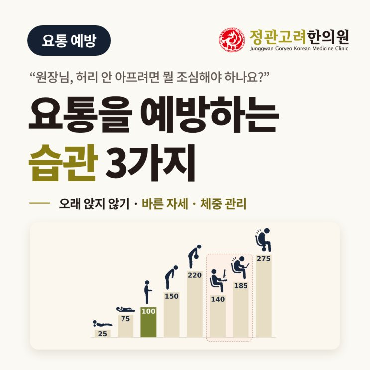
허리를 한 번 삐끗하고 나면 "또 아프면 어떡하지?" 하는 걱정이 늘 따라다닙니다.
"허리 안 아프려면 평소에 뭘 조심해야 하나요?"
"운동은 언제부터 해도 되나요?"
치료를 마무리할 때쯤 환자분들께 가장 자주 듣는 질문입니다.
결론부터 말씀드리면, 요통을 예방하기 위해 평소에 지키실 것은 크게 세 가지입니다.
- 오래 앉아 있지 않기
- 평소 바른 자세 유지하기
- 체중 관리하기
그리고 운동에 대해서는 한 가지 원칙만 기억하시면 됩니다.
운동은 허리가 '안 아플 때' 하는 것입니다.
오늘은 제가 진료실에서 환자분들께 늘 하는 단골 잔소리를 한번 제대로 풀어 보겠습니다.
오래 앉아 있지 마세요
같은 허리라도 어떤 자세를 취하느냐에 따라 디스크가 받는 압력이 크게 달라집니다.
스웨덴의 나켐슨(Nachemson) 박사가 자세별로 허리 디스크에 걸리는 압력을 직접 측정한 유명한 연구가 있습니다.1
바르게 서 있을 때 허리에 가해지는 압력을 100으로 놓고 비교해 보면 다음과 같습니다.
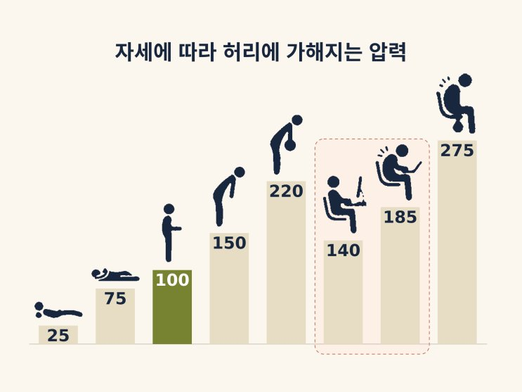
- 바로 누우면 25 : 서 있을 때의 4분의 1 수준입니다.
- 바르게 앉아만 있어도 140 : 서 있을 때보다 오히려 높습니다.
- 앉아서 허리를 숙이면 185, 숙인 채 물건을 들면 275 : 서 있을 때의 3배에 가깝습니다.
한눈에 보셔도 허리를 숙이는 자세, 숙여서 물건을 드는 자세가 가장 큰 부담이라는 것을 알 수 있습니다.
그리고 생각보다 '앉아 있는 자세'가 허리에 편한 자세가 아니라는 점도 알 수 있습니다.
실제로 진료실에서 보면, 오래 앉아 있다가 허리가 아파 오시는 경우가 참 다양합니다.
- 명절이나 여행길에 2시간 넘게 연달아 장거리 운전을 하고 나서
- 해외여행을 다녀오며 비행기를 오래 타고 나서
- 극장에서 3시간짜리 영화를 꼼짝 않고 보고 나서
- 늦은 밤까지 술자리에 오래 앉아 있다가 다음 날 아침에
이처럼 "무거운 것도 안 들었는데 왜 갑자기 허리가 아프지?" 싶을 때, 돌아보면 오래 앉아 있던 시간이 원인인 경우가 많습니다.
1시간 이상 연속으로 앉아 있지 마세요
앉아 있으면 허리가 쉬는 것 같지만, 표에서 보듯 앉은 자세도 허리에 적지 않은 부담이 됩니다.
게다가 앉아서 화면을 보다 보면 나도 모르게 몸이 앞으로 숙여져, 표의 '앉아서 허리 숙이기(185)'와 비슷한 자세가 되기 쉽습니다.1
여기에 같은 자세로 오래 있으면 디스크는 눌린 채로 쉴 틈이 없습니다.
오래 앉아 있으면 디스크가 숨이 막힙니다
허리 디스크 안에는 혈관이 들어가지 않습니다.
그래서 위아래 척추뼈와 맞닿은 경계면 주변 혈관에서 산소와 영양분이 조금씩 스며들어야 건강하게 유지될 수 있습니다.2
노폐물도 같은 길로 빠져나갑니다.
디스크는 스펀지와 비슷합니다.
눌리면 물이 빠져나가고, 눌림이 풀리면 다시 물을 머금습니다.
걷고 움직이면 디스크가 눌렸다 풀리기를 반복하면서 수분이 드나듭니다.
이러한 움직임이 디스크를 건강하게 지키는 데 도움이 된다고 봅니다.
연구 결과, 빠르게 걷기나 가벼운 달리기를 꾸준히 한 사람은 그렇지 않은 사람보다 디스크의 수분 함량이 높고 두께도 더 두툼했습니다.3
반대로 한 자세로 오래 앉아 있으면 디스크가 계속 눌린 채로 있어 물과 영양이 드나드는 흐름이 둔해집니다.
저는 환자분들께 이렇게 설명드립니다.
"숨을 오래 참으면 질식하듯,
계속 앉아 있으면 허리 디스크도 질식합니다."
영양 공급이 줄어들면 디스크 세포가 약해지고, 디스크가 빨리 닳는 원인이 될 수 있습니다.2
그래서 중간중간 일어나 걷는 것은 디스크에게 숨을 쉬게 해 주는 일입니다.
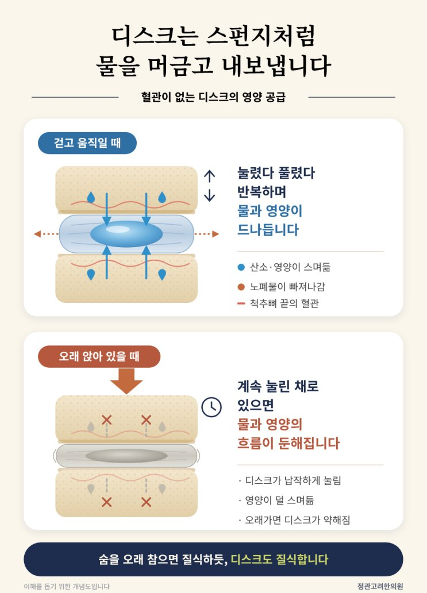
그래서 제가 환자분들께 가장 강조하는 원칙은 이것입니다.
"1시간 이상 연속으로 앉아 있지 마세요."
505법칙 (50분 앉았으면, 5분은 일어나기)
50분 앉아 있었다면 5분은 일어나서 허리를 움직여 주세요.
휴대폰 알람을 50분에 맞춰 두시면 잊지 않고 지키실 수 있습니다.
허리가 불편하면 50분이 되기 전에도 일어나세요.
이렇게 앉아 있는 시간을 한 번씩 끊어 주는 것을 '마이크로 브레이크(micro-break)'라고 합니다.
길게 쉬지 못하더라도, 짧게 자주 끊어 주는 것이 핵심입니다.
- 전화는 일어서서 받으세요.
- 물 한 잔 마시거나 화장실에 갈 때, 일부러 조금 돌아서 걸어 보세요.
- 일어선 김에 잠깐 걷거나, 몸이 편한 범위에서 허리를 가볍게 움직여 주세요.
- 앉아 있는 동안에도 수시로 자세를 바꿔 주세요.
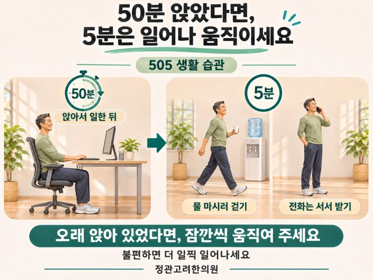
한 임상시험에서는 요통이 생기기 쉬운 사무직 직장인들을 6개월 동안 지켜보았습니다.4
일하는 중간에 자주 일어나 움직이게 한 그룹은 새로 허리 통증이 생긴 비율이 9%, 앉은 자세를 자주 바꾸게 한 그룹은 7%였던 반면, 별도의 프로그램을 받지 않은 그룹은 33%에 달했습니다.
일상생활 자세, 이렇게 바꿔 주세요
같은 일을 해도 어떤 자세로 하느냐에 따라 허리가 받는 부담이 크게 달라집니다.
허리가 편안한 바른 앉기 자세
오래 앉아 있어야 한다면 허리를 구부리지 않고 의자 등받이에 기대는 것이 핵심입니다.
등받이에 기대어 앉으면 등받이 없이 버티고 앉을 때보다 디스크 압력이 낮아진다는 측정 결과도 있습니다.5
- 엉덩이를 의자 안쪽 끝까지 깊숙이 넣어 앉습니다.
- 등을 등받이에 붙이고, 허리 뒤에 작은 쿠션이나 돌돌 만 수건을 받칩니다.
- 양 발바닥은 바닥에 편하게 닿게 하고, 다리는 꼬지 않습니다.
- 모니터는 눈높이에 맞춰 고개와 허리가 앞으로 숙여지지 않게 합니다.
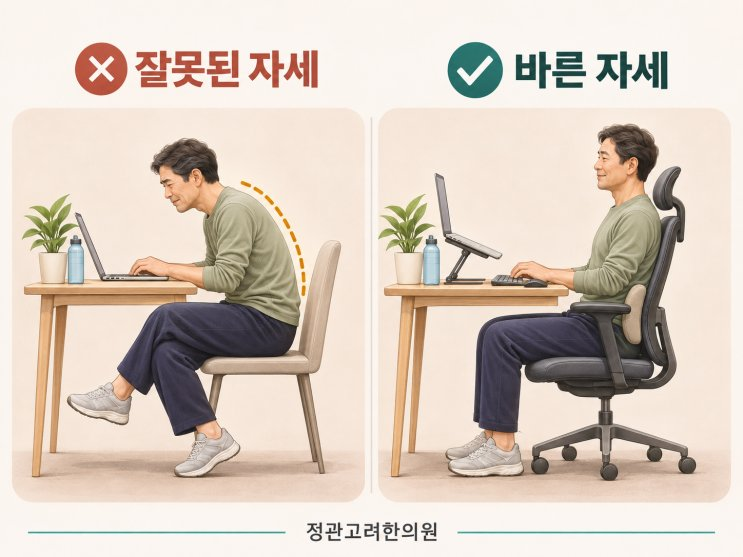
방바닥보다는 의자에 앉으세요
의자에 앉는 것보다 방바닥에 앉는 것이 허리에 더 무리가 됩니다.
방바닥에 양반다리로 앉으면 허리가 훨씬 더 둥글게 구부러지기 때문입니다.
성인 30명의 허리 엑스레이를 자세별로 비교한 국내 연구가 있습니다.6
바닥에 양반다리로 앉으면 의자에 앉을 때보다도 허리의 자연스러운 곡선이 훨씬 더 많이 무너져, 서 있을 때에 비해 거의 일자(약 73% 감소)로 펴졌습니다. 특히 그 변화 대부분이 디스크가 잘 생기는 허리 맨 아래쪽(요추 4번~천추 1번)에 몰렸습니다.
게다가 바닥에서는 등을 기댈 곳도 없고, 앉았다 일어날 때마다 허리를 깊이 숙여야 하기 때문에 허리에 무리가 많이 가게 됩니다.
식사하실 때도 방바닥에 앉는 좌식 밥상보다 식탁에서 하세요.
부득이하게 바닥에 앉아야 할 때는 벽에 등을 기대고, 방석을 접어 엉덩이 밑에 깔아 골반을 조금 높여 주세요.
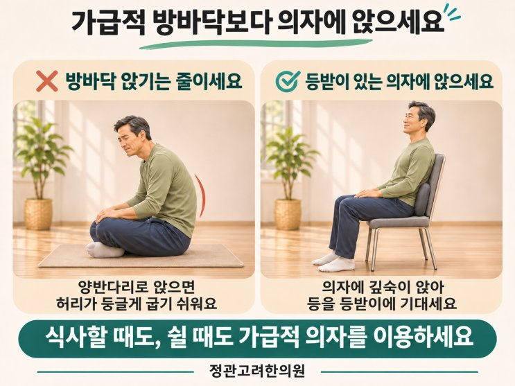
물건을 들 때는 몸에 바짝 붙여서 드세요
서서 허리만 숙여 물건을 들면 디스크 압력이 220까지 치솟습니다.1
하지만 같은 무게라도 어떻게 드느냐에 따라 허리가 받는 부담은 크게 달라집니다.
측정 결과, 20kg짜리 물건을 팔을 뻗어 멀리(약 60cm) 들고 있을 때보다, 몸에 바짝 붙여 들었을 때 디스크 압력이 약 40%나 줄었습니다.5 물건이 몸에서 멀어질수록 허리가 지렛대처럼 더 큰 힘을 버텨야 하기 때문입니다.
물건을 들 때는 이 순서대로 움직여 보세요.
- 물건 바로 앞까지 가까이 다가갑니다.
- 허리를 숙이지 말고 무릎을 굽혀 몸을 낮춥니다.
- 물건을 몸쪽으로 바짝 끌어당긴 뒤, 다리 힘으로 천천히 일어납니다.
- 방향을 바꿀 때는 허리를 비틀지 말고 발을 옮겨 몸 전체를 돌립니다.
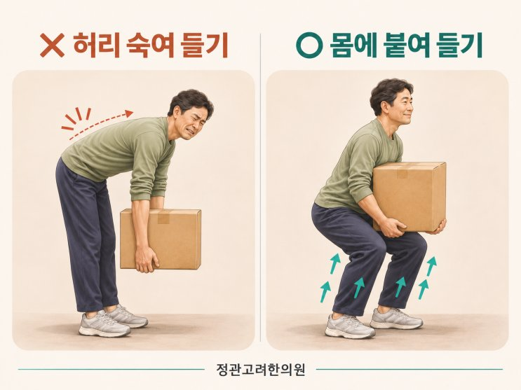
머리 감을 땐 무릎을 살짝 굽혀 주세요
허리를 푹 숙여 머리를 감는 자세는 표에서 본 '서서 허리 숙이기'와 비슷한 자세입니다.
- 숙여서 머리를 감을 때는 무릎을 조금 굽히고, 오래 숙이고 있지 마세요.
- 숙이는 자세가 아프다면 샤워하면서 서서 감는 편이 낫습니다.
- 세수와 설거지는 무릎을 살짝 굽힌 채로 하세요.
- 양말을 신을 때는 서서 신지 마시고, 아예 의자나 침대에 앉아서 신으시는 편이 안전합니다.
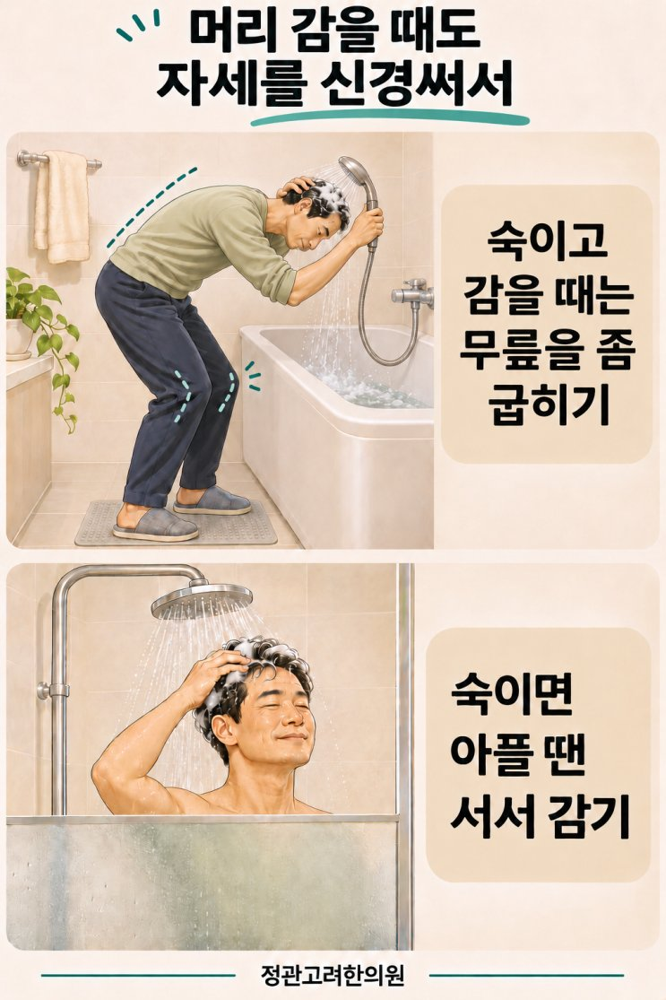
아침 시간, 허리를 한 번 더 아껴 주세요
밤새 자는 동안 디스크는 수분을 잔뜩 머금어 팽팽해집니다.
기상 직후에는 디스크 압력이 평소보다 높아져 있어,5 막 일어난 상태에서 허리를 숙이면 그만큼 부담이 커집니다.
만성 요통 환자에게 이른 아침 허리 숙이는 동작만 줄이게 했더니 통증이 가라앉았다는 임상시험 결과도 있습니다.7
기상 직후에는 허리를 숙여 머리를 감거나 무거운 물건을 드는 일을 가급적 피해 주세요.
체중 관리, 허리의 짐을 가볍게 해 주세요
허리는 상체의 무게를 하루 종일 떠받치는 기둥입니다.
체중이 늘면 그만큼 허리가 감당할 짐도 늘어납니다.
실제 진료실에서 환자분들을 진료하다 보면, 평소보다 체중이 2~3kg 정도만 늘어도 허리 통증을 호소하며 오시는 분들이 적지 않습니다.
특별히 무리한 일이나 다친 기억이 없는데도 허리가 뻐근하고 아프다면, 최근 내 체중이 조금이라도 늘지 않았는지 한번 점검해 보시기 바랍니다.
연구 결과로도 확인된 체중과 요통의 관계
33개 연구를 종합 분석한 결과, 비만인 사람은 정상 체중인 사람보다 요통과 만성 요통을 겪거나, 요통으로 진료받는 경우가 더 많았습니다.8
허리디스크로 다리가 저리고 아픈 좌골신경통도 마찬가지였습니다.
과체중일 때도 관련이 있었고, 비만일 때는 그 관련이 더 컸습니다.9
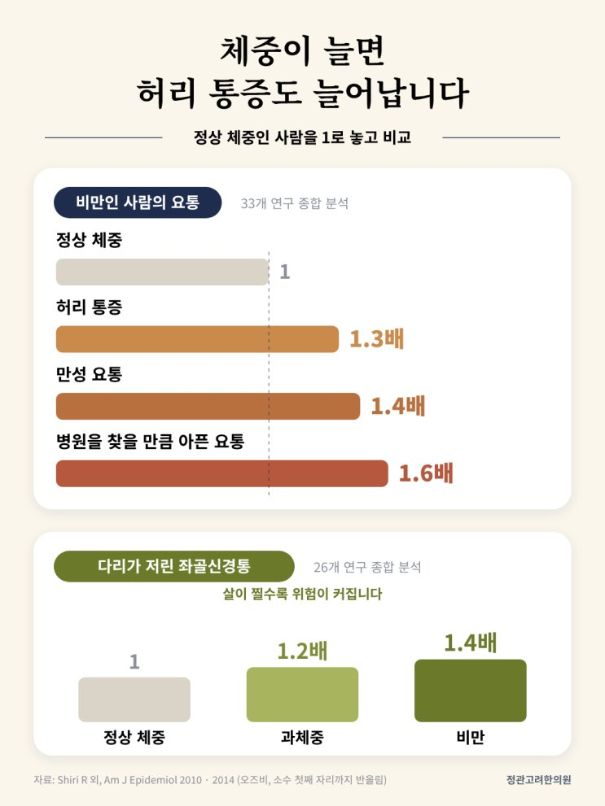
체중과 함께 허리둘레도 살펴보세요
체중계 숫자와 함께 '허리둘레'도 살펴보세요.
최근 메타분석에서도 허리둘레가 굵을수록 만성 요통이 많았다고 보고합니다.10
배가 나오면 몸의 무게중심이 앞으로 쏠립니다.
그러면 넘어지지 않으려고 허리가 뒤로 젖혀지고, 허리 근육은 쉴 틈 없이 버텨야 합니다.
그러므로, 체중이 늘지 않게 관리하는 것이 허리 건강에도 좋습니다.
허리 운동은 '안 아플 때' 하는 것입니다
"허리가 아픈데, 운동으로 풀어야 하지 않나요?"
진료실에서 자주 듣는 말입니다.
한마디로 정리하면,
아플 때는 쉬고, '안 아플 때' 운동해야 합니다.
허리가 아플 땐 '잘 쉬는 것'이 먼저입니다
허리가 삐끗해 아픈 급성기에는 아픈 것을 참으며 억지로 운동하거나 스트레칭을 하면 통증이 더 심해질 수 있습니다.
이때는 운동을 멈추고, 허리에 무리가 가는 일을 쉬어야 합니다.
다만, 쉰다는 것이 하루 종일 누워만 있으라는 뜻은 아닙니다.
무조건 누워만 있게 한 경우보다, 감당할 수 있는 범위에서 일상생활을 이어 가게 한 경우가 통증과 기능 회복에 조금 더 도움이 됐습니다.11
누워서 쉬다가도 화장실 가기, 집 안에서 천천히 걷기 정도는 아프지 않은 선에서 하시는 것이 좋습니다.
허리가 편해지는 휴식 자세
- 바로 누울 때 : 무릎 아래에 베개나 쿠션을 받쳐 무릎을 살짝 세웁니다. 이렇게 하면 허리의 과도한 꺾임이 줄어 바닥에 편하게 닿습니다.
- 옆으로 누울 때 : 무릎을 살짝 구부리고 양 무릎 사이에 베개를 끼웁니다. 골반과 허리가 비틀리는 것을 줄이는 데 도움이 됩니다.
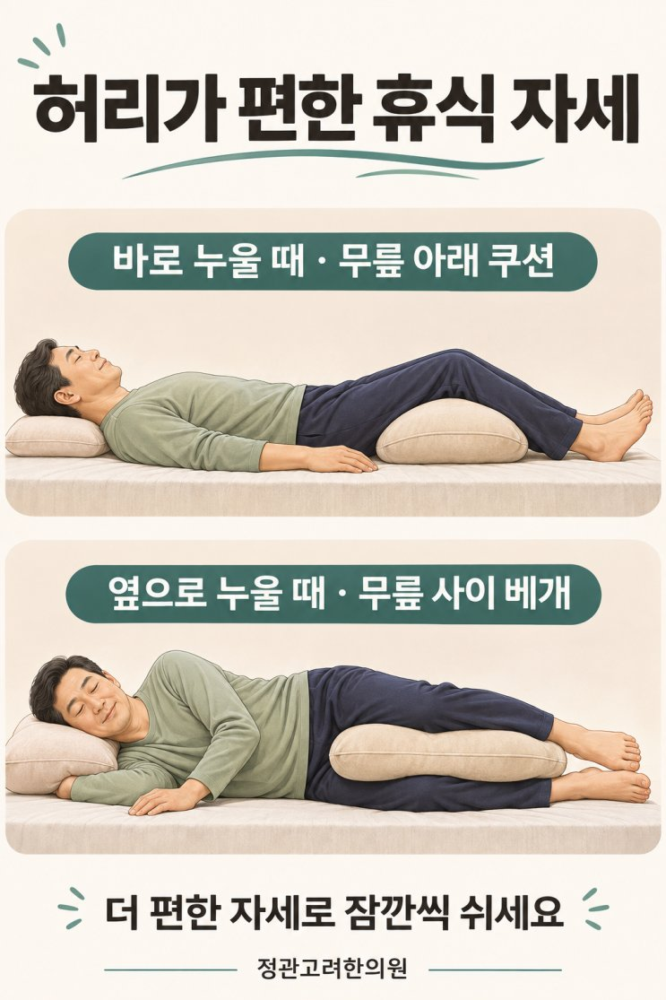
- 일어날 때 : 바로 상체를 일으키지 말고, 옆으로 돌아누운 뒤 팔로 바닥을 짚으며 천천히 일어납니다.
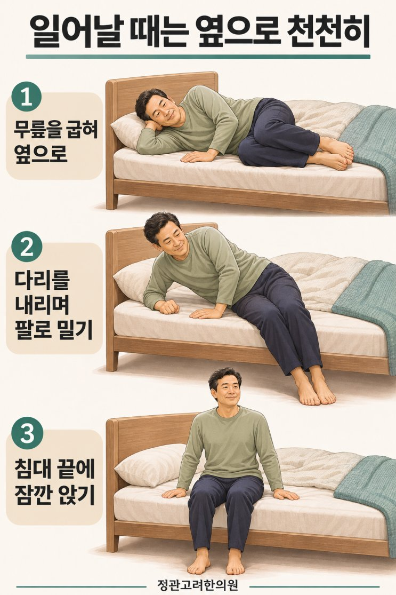
통증이 가라앉았다면, 이제 꾸준히 움직여 보세요
통증이 가라앉고 나면 그때부터가 본격적으로 운동을 시작할 때입니다.
다만 통증이 오래 이어지는 만성 요통이라면, 통증이 완전히 없어질 때까지 기다리기보다 상태에 맞춰 조금씩 운동을 늘려 가는 것이 좋습니다.
여러 임상시험을 종합한 연구에서는, 운동과 허리 관리 교육을 함께 했을 때 1년 이내 요통이 생길 위험이 약 45% 낮았습니다.12
허리 건강을 위해서는 다음과 같은 운동을 권해 드립니다.
- 걷기 : 가장 쉽고 안전합니다. 처음에는 짧게 시작해 조금씩 시간을 늘려 하루 30분 걷기를 목표로 해 보세요.
- 수영 : 물이 체중을 받쳐 주어 허리 부담이 적습니다. 자유형·배영 위주로 하시고, 허리를 많이 젖히는 접영은 조심하세요.
- 헬스 : 가벼운 무게로 바른 자세부터 익히세요. 허리를 숙여 무거운 중량을 드는 동작은 피하는 것이 좋습니다.
- 요가·필라테스 : 몸통 근육을 키우는 데 좋습니다. 다만 무리하게 비틀거나 깊이 숙이는 동작은 피하세요.
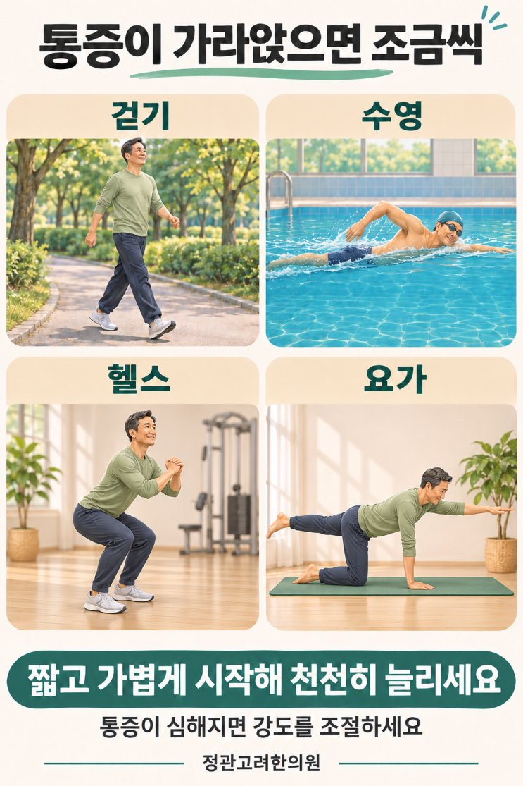
몸통 회전이 반복되는 운동은 조심하세요
골프나 테니스·탁구·배드민턴 같은 라켓 운동, 볼링처럼 몸통 회전이 반복되는 운동은 연습량과 동작에 신경 써 주세요.
같은 동작을 수백 번 되풀이하다 보면 허리에 부담이 쌓일 수 있습니다.
골프에서 가장 흔한 부상도 허리 부상입니다.13
물론 이런 운동을 아예 하지 말라는 뜻은 아닙니다.
- 통증이 남아 있을 때는 강하게 비틀지 말고 쉬세요.
- 다 나은 뒤에도 연습량을 갑자기 늘리지 마세요.
- 시작 전후로 충분히 몸을 풀어 주세요.
- 평소에 걷기 같은 대칭 운동을 함께 해서 허리를 받쳐 주는 근육을 키우세요.
오늘 꼭 기억하실 3가지 습관 + 하나 더
- 첫째, 오래 앉아 있지 마세요
1시간 이상 연속으로 앉아 있지 말고, 50분 앉았으면 5분은 일어나 허리를 움직여 주세요. 이렇게 한 번씩 끊어 주는 '마이크로 브레이크'를 생활화하세요. - 둘째, 일상생활 자세를 바로 하세요
앉을 때는 방바닥보다 의자 등받이에 기대어 앉고, 물건은 몸에 바짝 붙여서 드세요. 머리 감을 땐 무릎을 살짝 굽히고, 특히 아침 시간에는 허리 숙이는 동작을 조심하세요. - 셋째, 체중이 늘지 않게 관리하세요
체중, 특히 뱃살이 늘면 허리가 짊어지는 짐도, 허리 통증도 늘어납니다. - 하나 더, 운동은 안 아플 때 하세요
아플 때는 무리하지 말고 쉬고, 통증이 가라앉으면 걷기 같은 운동을 조금씩 꾸준히 이어 가세요.
허리는 평생 쓰는 몸의 기둥입니다.
오늘부터 작은 습관 하나씩만 바꿔 보세요.
한의학박사 · 한방재활의학과 전문의 박장우
참고문헌
- Nachemson AL. The lumbar spine: an orthopaedic challenge. Spine. 1976;1(1):59-71.
- Urban JP, Smith S, Fairbank JC. Nutrition of the intervertebral disc. Spine. 2004;29(23):2700-2709.
- Belavý DL, Quittner MJ, Ridgers N, Ling Y, Connell D, Rantalainen T. Running exercise strengthens the intervertebral disc. Sci Rep. 2017;7:45975. doi.org/10.1038/srep45975
- Waongenngarm P, van der Beek AJ, Akkarakittichoke N, Janwantanakul P. Effects of an active break and postural shift intervention on preventing neck and low-back pain among high-risk office workers: a 3-arm cluster-randomized controlled trial. Scand J Work Environ Health. 2021;47(4):306-317. doi.org/10.5271/sjweh.3949
- Wilke HJ, Neef P, Caimi M, Hoogland T, Claes LE. New in vivo measurements of pressures in the intervertebral disc in daily life. Spine. 1999;24(8):755-762. (PMID 10222525)
- Bae JS, Jang JS, Lee SH, Kim JU. A comparison study on the change in lumbar lordosis when standing, sitting on a chair, and sitting on the floor in normal individuals. J Korean Neurosurg Soc. 2012;51(1):20-23. doi.org/10.3340/jkns.2012.51.1.20
- Snook SH, Webster BS, McGorry RW, Fogleman MT, McCann KB. The reduction of chronic nonspecific low back pain through the control of early morning lumbar flexion: a randomized controlled trial. Spine. 1998;23(23):2601-2607. doi.org/10.1097/00007632-199812010-00015
- Shiri R, Karppinen J, Leino-Arjas P, Solovieva S, Viikari-Juntura E. The association between obesity and low back pain: a meta-analysis. Am J Epidemiol. 2010;171(2):135-154. doi.org/10.1093/aje/kwp356
- Shiri R, Lallukka T, Karppinen J, Viikari-Juntura E. Obesity as a risk factor for sciatica: a meta-analysis. Am J Epidemiol. 2014;179(8):929-937. doi.org/10.1093/aje/kwu007
- You Q, Jiang Q, Li D, Wang T, Wang S, Cao S. Waist circumference, waist-hip ratio, body fat rate, total body fat mass and risk of low back pain: a systematic review and meta-analysis. Eur Spine J. 2022;31(1):123-135. doi.org/10.1007/s00586-021-06994-y
- Dahm KT, Brurberg KG, Jamtvedt G, Hagen KB. Advice to rest in bed versus advice to stay active for acute low-back pain and sciatica. Cochrane Database Syst Rev. 2010;(6):CD007612. doi.org/10.1002/14651858.CD007612.pub2
- Steffens D, Maher CG, Pereira LSM, et al. Prevention of low back pain: a systematic review and meta-analysis. JAMA Intern Med. 2016;176(2):199-208. doi.org/10.1001/jamainternmed.2015.7431
- Lindsay DM, Vandervoort AA. Golf-related low back pain: a review of causative factors and prevention strategies. Asian J Sports Med. 2014;5(4):e24289. doi.org/10.5812/asjsm.24289